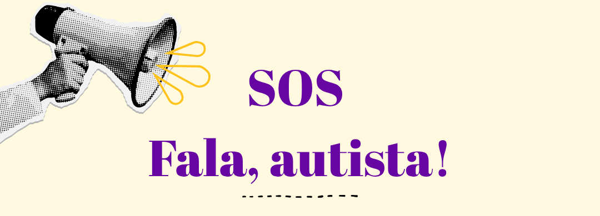

Seja bem-vindo a mais um galho do projeto Voz Autista. Esse dispositivo de comunicação emergencial é uma resposta a uma questão muito trazida por nossos acolhidos nos encontros do "Fala, autista!": a dificuldade de se manter seguro durante crises na rua. Este é um protótipo que visa amparar a comunicação emergencial, oferecendo condições de autonomia e comunicação aos nossos acolhidos. Nos escreva através do email contato@vozautista.com e nos conte como foi sua experiência utilizando o SOS